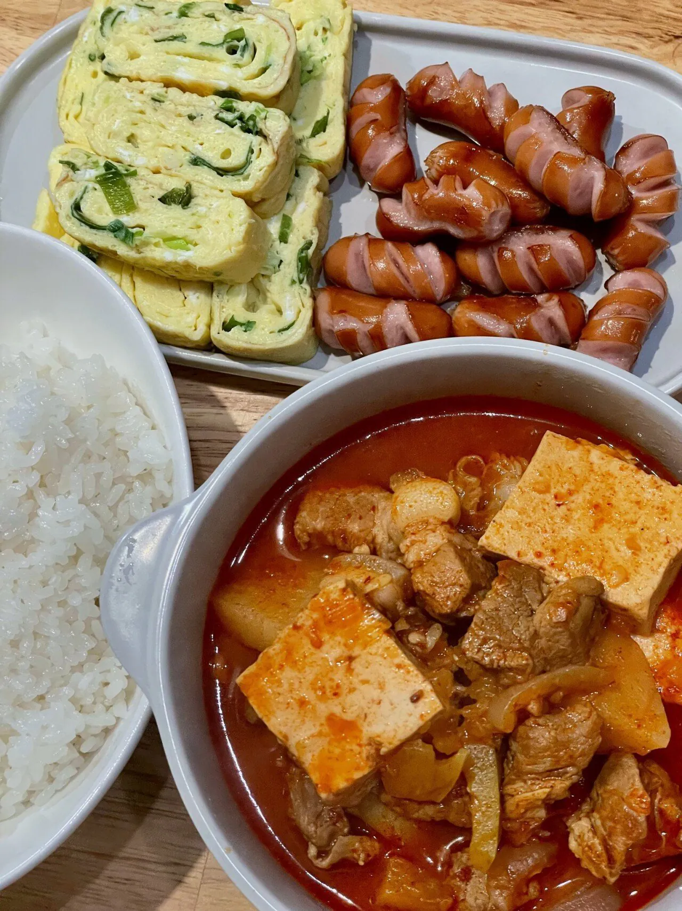
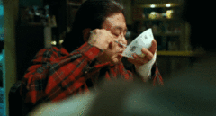

아니 어케 이게 호불호 갈리지?
밥 두공기 뚝딱 아님?

아니 어케 이게 호불호 갈리지?
밥 두공기 뚝딱 아님?
나이들수록 좋아져야되지않나..
된장찌개랑 계란후라이가 더 좋아져쓰..
더 좋은게 생긴거지, 싫어지기까지 한건 아니잖아??
싫어진것도 맞아 싫어지면서 저 두개를 좋아하게됨
내돈주고 절대안먹어
ㅈㄹ
아니 내가 싫다는데 왜이럼 진짜웃기네 ㅋㅋㅋㅋㅋㅋㅋㅋ
케챱이 없네...
소세지말고 나물반찬이 있어야...
국만 있어도 두 그릇 먹겠다
찌개 땟깔봐라 쥑이네 ㅋㅋ 바삭바삭한 김이랑 먹으면 아주 죽음으로 맛있겠는데 소주 한 잔 크아♡ 소주 안먹은지 3주정도 지나니까 슬슬 땡기네
돼지비계딸린 김찌 극혐

돼지 누린내 못잡은 비계면 최악임ㅋㅋ
그건 다른영역임
저 김치찌개 하나로 밥 세공기는 뚝딱이겠다
아니면 머리를 뚝딱 패주마
찌개나 소세지 둘 중 하나 빼고 개운한 거 하나 있어줘야징
개인적으로 소세지 빼고 담백한 나물 같은거 하나있으면 더 나았을듯
밥 두공기 뚝딱하고
자다가 새벽에 나와서 냄비째로 숟가락으로 존나 퍼먹음
귀여워 ㅋㅋㅋ
존나 맛있겠다...내일 국거리용 삼겹살 오면 바로 김찌달려야겠다
이게 어케 호불호 갈림? 호극호다
채식주의자한테는 불호겠지
이거 소화 안되는거면 나라에서 건강검진 편지 올 나이대일듯 ㅋㅋ
케챱이 빠졌잖아
난 왜 김찌보다 된장국이 맛있을까
계란말이보단 후라이가 김찌랑 어울리고 즉석김 있으면 정신나간다 무생채같은 반찬 있으면 밸런스 완벽
소주2병각
존내맛있어보인다.
뭔가 조합이 살짝 아쉽지 않나
김치찌개에 계란말이면 충분한데
소시지 너무 과해서 느끼할 것 같은
김이 없잖아!

공기밥 하나만먹어도 속 더부룩해...
이걸 반찬 투정하면 밥공기로 정수리 씨게 맞아야함ㅇㅇ
불호가 있다면 이유가 뭘까
나트륨 ㅋㅋ 유난이 아니라 찌개류 국류 웬만함 안먹고 먹어도 국물 남기는편이라..
10대부터 건강 열심히 챙기는구나.. 본받아야지
저기서 하나만 좀 가벼운 반찬으로 바껴야 한다
이거마저 불호인 애들은 뭐 먹고 삼?
고추장찌개 하나만 있어도 밥 두공기 뚝딱임
생일상이냐
가공육이 건강에는 안좋긴해
와씨 다이어트중인데 보자마자 입에 침고임;
불호는 뮤슨
나이드니까 계란말이 김치찌개 싫어짐..